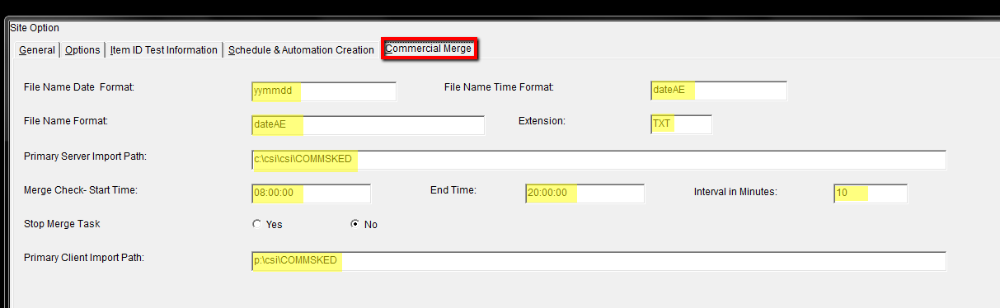

Engineering Services
The Engineering Service program is constantly running on the server, in the background of the Engineering System performing the following four major functions: creating daily schedules, merging with spot import from traffic, creating load file for automation.
Four Main Functions of Engineering Services
Daily Schedule: Creates a viewable/editable daily schedule five days in advance. The creation of the daily schedule is done overnight. The engineering services window displays when a new daily schedule will be created, what day it is for, when a daily schedule will be purged, and the date after which all schedules will be purged from the main schedule screen:
Commercial Merge: Engineering Services checks for the Spot export file from Traffic. If there are new spots it imports them into the schedule, if there is a spot change, it deletes the existing schedule and re-imports a new schedule containing the spot change (usually every 2 minutes, but can be adapted to client needs in the lists screen). The engineering services window shows the time and date it will look for a new merge file.

Load File: Converts the accepted schedule into an automation file called a load file. The engineering services window displays the time and date a new load file will be created and the date of that load file. It also displays the time and date old load files will be purged prior to a certain date.

States of Engineering Services
The status of the background processor engineering services can be determined in the engineering system at the top of screen at all times.
There are three states of engineering services.
Service Status: Not Determined (Black).
Service Status not determined will appear when the counterpoint engineering software is first opened for the day. This indicates that the software is still determining the status of the background processor. When you open the counterpoint engineering software it may take up to five minutes to determine the status of the background processor.

Service Status: Running (Green).
This indicates that the background processor (engineering services) is running. This generally is the correct status of engineering services.
It indicates that Counterpoint Engineering Software is creating new daily schedules, merging daily schedules with spots from the traffic export. looking for a commercial merge file, load files, and exporting the daily schedule to automation.
Service Status: Not Running (Red)
This indicates that the background processor is not running. This is generally an incorrect state for the background processor. In this state the background processor is note looking for commercial merges, daily schedules, load files, or exporting to the automation system. If you receive this as a status contact counterpoint service (service@counterpoint.net), unless directed otherwise.
FAQ’s Engineering Services
Where do I define where the background service is looking for new files to import, and exporting?
The path where the background processor is looking for certain documents and sending certain documents is defined in the lists screen “Automation” tab, under the Export/Import tab.
Image 1: Lists Screen. Select Automation.
Image 2: Choose Export Paths Tab, under Site Options.
Where do I determine how long the counterpoint engineering system retains a daily schedule?
This is determined in the lists screen under the “Site Options” tab, in the “Options” tab.
Image 1: Choose Site Options in Lists Screen.

Image 2: Choose Options tab. In Site Options.

Where do I determine when background service creates: daily schedules, and creates a load file?
All this is determined in the Lists screen under “Site Options” under the “Schedule & Automation Creation” tab.
Image 1: Choose Site Options in the Lists Screen.
Image 2: Choose Schedule & Automation Creation tab under Site Options.
Image 3: Note Schedule Creation Field. This is where lead time in creating schedules is defined.
Image 4: Note Automation Creation. This is where lead time for the creation of load files is defined.
Where is the timeline for the commercial merge file defined?
Image 1: Choose Site options in lists screen.
Image 2: Choose Commercial Merge tab under Site Options.
What is defined in the Commercial Merge Tab:
File Name Date Format – is the format of the import file from Counterpoint Traffic (for example yyyymmdd would indicate the file that engineering will import is the date).*
File Name Format – is the format the import file from Counterpoint Traffic has including a unique letter combination (example dateAE would be a file 20110409AE.txt)*
File Name Time Format – the same as file name format?*
Extension – is the extension that the file will have when it is imported into Counterpoint Engineering from Counterpoint Traffic.*
*The file format defined in the image below is: dateAE (yyyymmddAE) with an extension of .txt so the file name that Counterpoint Engineering will look for is 20110409AE.txt (April 9, 2011 with an AE after it and an extension of .txt)
Primary Server Path – indicates the location of the csi folder on the server itself, where Counterpoint Engineering will look for a commercial merge file with the above naming convention.
Merge Check Start Time – indicates the time of day when Counterpoint Engineering will start looking for a commercial merge file.
Stop Merge Task – indicates the time of day when Counterpoint Engineering will stop looking for a new commercial merge file.
Primary Client Import Path – the path that the user’s PC looks at to see the Primary Server Path.
Image 3: Note the fields highlighted in yellow are defined above.
